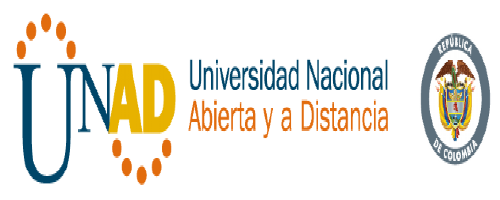

<!DOCTYPE html PUBLIC "-//W3C//DTD XHTML 1.0 Transitional//EN" "http://www.w3.org/TR/xhtml1/DTD/xhtml1-transitional.dtd">
<html lang="es"></html>
<html xmlns="http://www.w3.org/1999/xhtml">

<head>
<meta content="text/html; charset=utf-8" http-equiv="Content-Type" />
<title>Control De Acceso</title>
<style type="text/css">
.auto-style4 {
	border-color: #CC3300;
	border-width: 0;
}
.auto-style6 {
	color: #FFFFFF;
}
.auto-style7 {
	text-align: center;
	color: #FFFFFF;
	border: 3px solid #CC3300;
	background-color: #EF8115;
}
.auto-style8 {
	text-align: center;
}
.auto-style9 {
	border-width: 0px;
}
 p.MsoNormal
	{margin-top:0cm;
	margin-right:0cm;
	margin-bottom:10.0pt;
	margin-left:0cm;
	font-size:12.0pt;
	font-family:"Cambria",serif;
	color:black;
}
p.MsoListParagraphCxSpFirst
	{margin-top:0cm;
	margin-right:0cm;
	margin-bottom:0cm;
	margin-left:36.0pt;
	margin-bottom:.0001pt;
	font-size:12.0pt;
	font-family:"Cambria",serif;
	color:black;
}
p.MsoListParagraphCxSpMiddle
	{margin-top:0cm;
	margin-right:0cm;
	margin-bottom:0cm;
	margin-left:36.0pt;
	margin-bottom:.0001pt;
	font-size:12.0pt;
	font-family:"Cambria",serif;
	color:black;
}
p.MsoListParagraphCxSpLast
	{margin-top:0cm;
	margin-right:0cm;
	margin-bottom:10.0pt;
	margin-left:36.0pt;
	font-size:12.0pt;
	font-family:"Cambria",serif;
	color:black;
}
#youtube {
}
.auto-style11 {
	font-size: xx-small;
}
.auto-style13 {
	font-size: small;
}
.auto-style14 {
	border-width: 0px;
	margin-right: 0px;
}
.auto-style15 {
	color: #5C908E;
	font-size: small;
}
.auto-style17 {
	text-align: left;
}
.auto-style18 {
	text-align: right;
}
.auto-style19 {
	text-decoration: none;
}
.auto-style20 {
	text-align: center;
	color: #FFFFFF;
	border: 3px solid #0000FF;
	background-color: #5C908E;
}
.auto-style21 {
	color: #EF8115;
	font-family: Verdana, sans-serif;
}
.auto-style22 {
	font-size: small;
	font-family: Verdana, Geneva, Tahoma, sans-serif;
}
.auto-style23 {
	color: #EF8115;
	font-family: Verdana, sans-serif;
	font-size: small;
}
.auto-style24 {
	font-size: small;
	font-family: Verdana, Geneva, Tahoma, sans-serif;
	color: #0000FF;
}
</style>
<meta content="Seguridad, Informacion, Informatica, UNAD, 2018, Diseño Web" name="keywords" />
<meta content="Informacion de Seguridad de la informacion recopilada por estudiante de la universidad nacional abierta a y Distancia." name="description" />
</head>
<body>
	<script type="text/javascript" src="js/jquery-3.3.1.js"></script>
	<script type="text/javascript" src="js/modernizr-custom.js"></script>
	<script type="text/javascript" src="js/prefixfree.js"></script>
	<table align="center" style="width: 100%">
		<tr>
			<td class="auto-style8"><a href="index.html">
			</a></td>
		</tr>
	</table>
	<table align="center" class="auto-style4" style="width: 977px">
		<tr>
			<td class="auto-style7" style="width: 114px">
			<span class="auto-style6" lang="es-co"><strong class="auto-style8">
			<a class="auto-style19" href="Protect.html">Protección de Datos</a></strong></span></td>
			<td class="auto-style7" style="width: 132px"><span lang="es-co">
			<strong><a class="auto-style19" href="Politica.html">Politicas de Seguridad</a></strong></span></td>
			<td class="auto-style20" style="width: 89px"><span lang="es-co">
			<strong>Control de Accesos</strong></span></td>
			<td class="auto-style7" style="width: 138px"><span lang="es-co">
			<strong><a class="auto-style19" href="Incidente.html">Incidentes de Seguridad</a></strong></span></td>
			<td class="auto-style7" style="width: 136px"><span lang="es-co">
			<strong><a class="auto-style19" href="SegFisica.html">Seguridad Fisica</a></strong></span></td>
			<td class="auto-style7" style="width: 173px">
			<a class="auto-style19" href="Activity.html"><span lang="es-co">
			<strong>C</strong></span></a><span class="auto-style24" lang="es-co"><strong>ertificate</strong></span></td>
			<td class="auto-style7" style="width: 118px"><span lang="es-co">
			<strong><a class="auto-style19" href="Acerca.html">Acerca de</a></strong></span></td>
		</tr>
	</table>
	<table style="width: 100%">
		<tr>
			<td style="width: 1042px">&nbsp;</td>
			<td style="width: 121px" class="auto-style18" valign="top">
			<span lang="es-co"><strong>Visitante No</strong>.</span></td>
			<td class="auto-style17"><div id="sfc8kwbxdsa5qajna86p6ee9bd8fnyaefx8"></div>
<script type="text/javascript" src="https://counter10.allfreecounter.com/private/counter.js?c=8kwbxdsa5qajna86p6ee9bd8fnyaefx8&down=async" async></script>
<noscript>
<div class="auto-style17">
<a href="https://www.contadorvisitasgratis.com" title="contador de visitas gratis"></a>
</div>
			</noscript>&nbsp;</td>
		</tr>
		<tr>
			<td style="width: 1042px" rowspan="2">
			<p align="center" class="MsoNormal" style="text-align:center; font-size: small;">
			<span lang="es-co">
			<span style="mso-bidi-font-weight:
normal"><span class="auto-style21">
			<strong>CONTROL DE ACCESOS</strong></span></span></span></p>
			<p align="center" class="MsoNormal" style="text-align:center">
			<span class="auto-style13">
			&nbsp;</span></p>
			<span class="auto-style22">Consiste en la autenticación, 
			autorización de acceso y auditoría. Una definición más estrecha de 
			control de acceso abarcaría únicamente la aprobación de acceso, por 
			lo que el sistema adopta la decisión de conceder o rechazar una 
			solicitud de acceso de un sujeto ya autenticado, sobre la base a lo 
			que el sujeto está autorizado a acceder. Autenticación y control de 
			acceso a menudo se combinan en una sola operación, por lo que el 
			acceso está aprobado sobre la base de la autenticación exitosa, o 
			sobre la base de una token de acceso anónimo. Los métodos de 
			autenticación y tokens incluyen contraseñas, escaneados biométricos, 
			llaves físicas, llaves electrónicas y dispositivos, caminos ocultos, 
			barreras sociales y monitoreo por seres humanos y sistemas 
			automatizados.</span><br class="auto-style22" />
			<br class="auto-style22" /><span class="auto-style23"><strong>Servicios</strong></span><br class="auto-style22" />
			<br class="auto-style22" /><span class="auto-style22">Los controles de acceso a los sistemas 
			informáticos proporcionan los servicios esenciales de autorización, 
			identificación y autenticación (I&amp;A), aprobación del acceso y 
			rendición de cuentas donde:2​</span><br class="auto-style22" />
			<br class="auto-style22" /><span class="auto-style22">
			<span lang="es-co">- </span>la autorización especifica lo que un 
			sujeto puede hacer.</span><br class="auto-style22" />
			<span class="auto-style22"><span lang="es-co">- </span>La identificación y autenticación 
			garantizan que sólo el sujeto legitimados puedan entrar (log on) a 
			un sistema</span><br class="auto-style22" />
			<span class="auto-style22"><span lang="es-co">- </span>La aprobación del acceso garantiza el 
			acceso durante las operaciones, mediante la asociación de usuarios 
			con los recursos que a los que están autorizados a acceder, 
			basándose en la política de autorizaciones.</span><br class="auto-style22" />
			<span class="auto-style22"><span lang="es-co">- </span>La rendición de cuentas o auditoría 
			identifica que un sujeto (o todos los sujetos asociados un usuario) 
			ha hecho.&nbsp;</span></td>
			<td id="youtube" class="auto-style8" colspan="2"><iframe width="560" height="315" src="https://www.youtube.com/embed/da0JfXjVSOs?rel=0" frameborder="0" allow="autoplay; encrypted-media" allowfullscreen></iframe>
			<br />
			<span class="auto-style11">&nbsp;</span><span class="auto-style11" lang="es-co">Derechos 
			Reservados Recursos WordPress</span></td>
		</tr>
		<tr>
			<td id="youtube" colspan="2"><a class="twitter-timeline" data-width="560" data-height="315" data-theme="light" href="https://twitter.com/UniversidadUNAD?ref_src=twsrc%5Etfw">Tweets by UniversidadUNAD</a> <script async src="https://platform.twitter.com/widgets.js" charset="utf-8"></script>&nbsp;</td>
		</tr>
		<tr>
			<td style="width: 1042px">&nbsp;</td>
			<td colspan="2">&nbsp;</td>
		</tr>
		<tr>
			<td class="auto-style8" colspan="3">
			<a href="https://www.unad.edu.co/" target="_blank">
			</a>&nbsp;<br />
			<span class="auto-style15" lang="es-co"><strong>Oscar Rodolgo 
			Guerrero - Multimedia 2018<br />
			<a href="mailto:orguerreros@unadvirtual.edu.co?subject=Solicitud de Informacion acerca de Sitio Web">
			Escribeme a mi Correo Corporativo: oguerreros@unadvirtual.edu.co</a></strong></span></td>
		</tr>
	</table>
</body>

</html>
